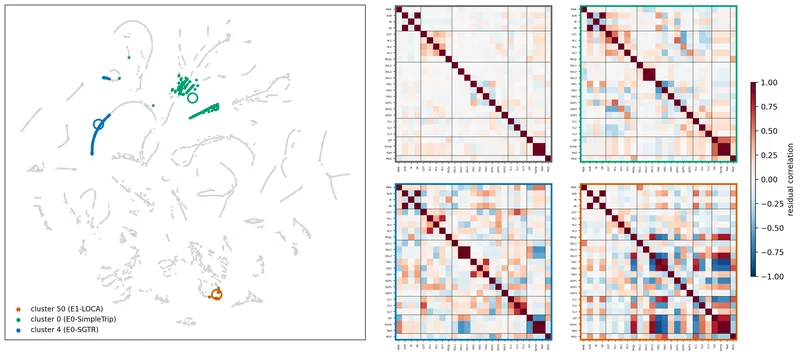
Publications 논문
2026
1 under reviewBefore CWNU 창원대 이전
13 journal articles · 17 conference presentations
Journal Articles 학술지 논문
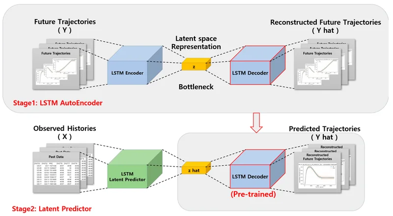
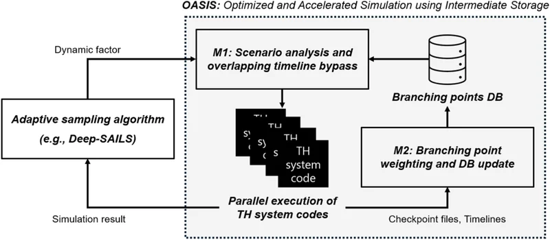

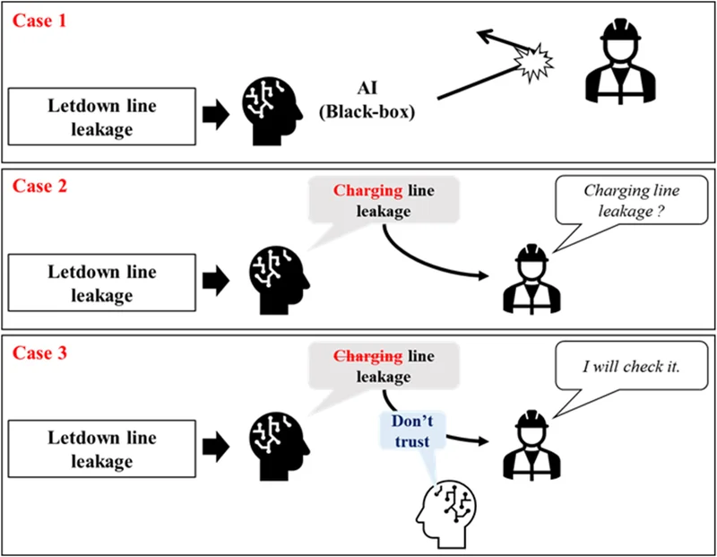
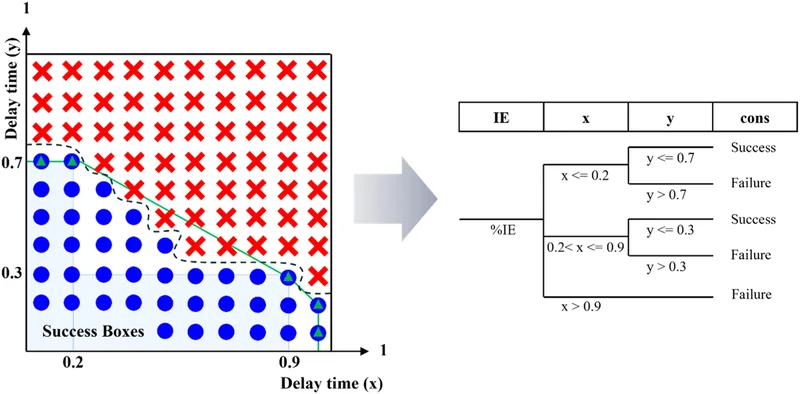
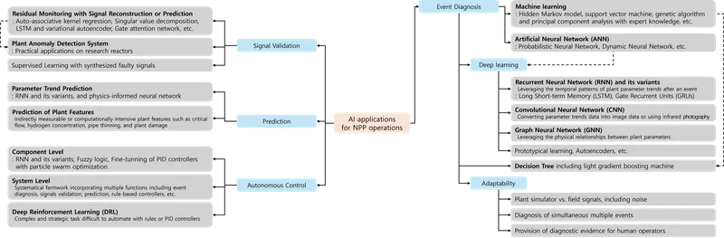

[J7] Deep Reinforcement Learning for a Multi-Objective Operation in a Nuclear Power Plant
Best Paper Award, Nuclear Engineering and Technology, Korean Nuclear Society.
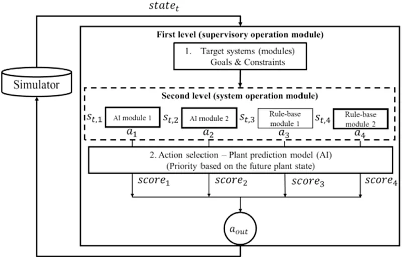
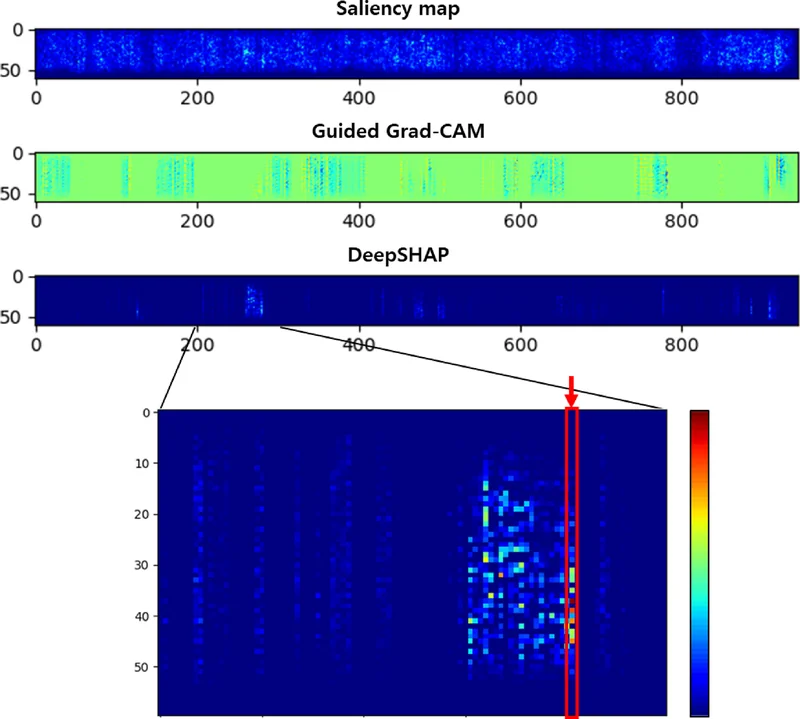
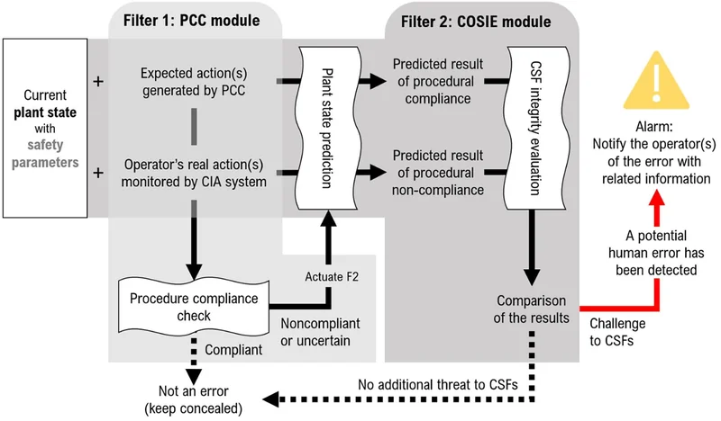

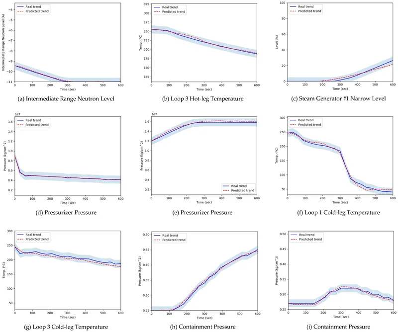
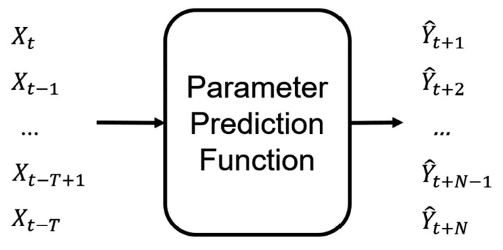
Conference Presentations 학술대회 발표 17 selected · 6 awarded
2026[C17] Feature Space Memory Banks for Example-Based Model Explanation in Safety-Critical Applications — ESREL, Braga
2025[C16] Example-based Explanation Framework for NPP Parameter Trend Prediction using Latent Space Similarity — KNS Fall, Changwon
2025[C15] Dynamic Risk Assessment Framework with Limit Surface Search and Success and Failure Domains Analysis — ASRAM, PattayaGRAND PRIZE
2025[C14] Epistemic Uncertainty in Deep Learning Models and Its Application for Model Performance Improvement — ANS Annual, Chicago
2024[C13] Parameters Trend Prediction using Two-Stage Deep Learning Models — ISOFIC, JejuBEST STUDENT PAPER
2024[C12] Epistemic Uncertainty in Deep Learning Models for Simulation Optimization and Consequence Prediction — KNS Fall, ChangwonBEST PAPER
2024[C11] Deep Autoencoding Gaussian Mixture Model for Detection of Manipulation Attacks — PSAM17 & ASRAM, Sendai
2023[C10] Postprocessing of Multidimensional Limit Surfaces Searched by a Deep Learning-based Algorithm — KNS Fall, GyeongjuBEST PAPER
2023[C9] NPP Emergency Response Planning with Tree Search and Deep Learning — ESREL, Southampton
2022[C8] Sensitivity Study of a Guided Simulation Algorithm with Deep Learning — ASRAM, Daejeon
2022[C7] Application of Deep Reinforcement Learning for Multi-objective and Continuous Control of Reactor Coolant — KNS Fall, Changwon
2022[C6] Deep Learning for Guided Simulation of Scenarios for Dynamic PRA — PSAM 16, Honolulu
2021[C5] Uncertainty-aware Limit Surface Search Algorithm using DNN — ANS Winter, Washington DC
2021[C4] Limit Surface Search Algorithm with ANN and Monte Carlo Dropout Uncertainty Quantification — PSA 2021, Online
2021[C3] Adaptive Sampling for Limit Surface Search using DNN and Monte Carlo Dropout — KNS Fall, ChangwonPSA STUDENT PAPER
2019[C2] NPP Parameter Prediction Strategy for Human Error Detection — ANS Winter, Washington DC
2018[C1] Operation Validation System through Time Series Forecasting by ANN — KNS Student Conference, YeosuBEST PAPER